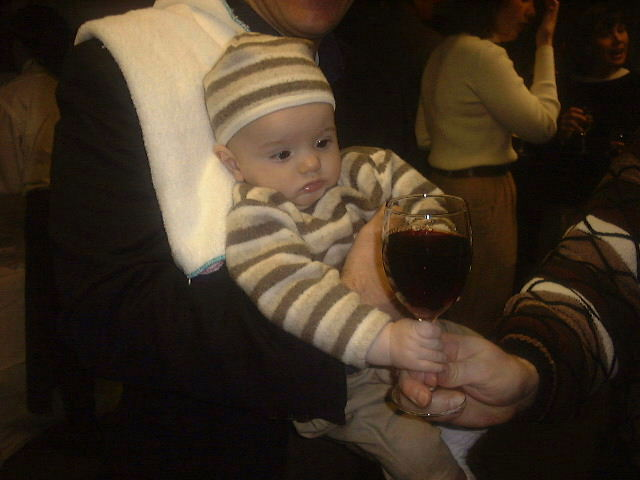

He's here! After 9 long months our baby boy has finally arrived! This site is for family members to keep track of his progress.

We all spent the seek of the 16th on Maui and Arthur decided while Mom and Dad were relaxing that it was time to start working on advanced baby skills, just to help them out. In that one week on vacation he cut two teeth (bottom front incisors) learned to roll over, sit up, crawl and started practicing his "cruising" (walking while holding on). The cruising is still limited, but he can stand and hold on to a chair and is working on transferring his grip to another object (like Dad).
Mom and Dad are now frantically baby-proofing the house. The nursery is mostly OK, but it is amazing how many innocuous looking things are dangerous. Just this morning Dad found that the rubber tip of the doorstop can come off and become a choking hazard. The crib has been lowered all the way and a gate has been attached to the nursery door. Dad's office has also seen the sue of power tools and there is now a baby area with an ethernet drop and a gate so that Dad can hang with Arthur and pretend towork occasionally!
This week has also seen the start of solid food. So far Arthur is more interested in playing with food than eating it and has consistently turned up his nose at the rice cereal. On Maui the natives were all extolling the virtues of poi (taro root - the Hawaiian starch staple) and we are looking around for some for him to try.
Arthur has been in an infant hearing study at UW Speech and Hearing Sciences in Dr. Lynn Werner's lab.His hearing is testing normal and he enjoyed watching the toy lion and bear light up when he heard a sound. He got a little distracted by the cute baby in the one way mirror and didn't respond to the tones! At any rate, Arthur got his UW graduate T-shirts a lot more quickly than Mom got hers.
This is Arthur's first spring and he is enjoying nature walks with Mom in the fine weather we have been having. Dad takes him out on the dock outside the office and he really seems to like the boats. His favorite game right now is making himself disappear under a diaper or a blanket by covering up his head. Giggling starts when you say "Where did Arthur go?" and play peek-a-boo.
Well, it has been a while since the last update and Arthur is growing fast! At five and a half months he is 27 1/2 inches long and weighs in at 15 lbs. 12 oz. Doctor anderson thinks that his eyes will remain Hazel like Dad's. Arthur, Mom and Dad have all been sick recently - Arthur is learning to share.
Arthur's friend Ian LeMaster came over to play on Saturday night while Ian's Mom and Dad went on a date. They had fun together and seemed to enjoy smiling at each other and grabbing each other's faces. Arthur can pretty much sit up by himself now and has a lot to say if only we could understand it. He enjoys sitting up and concentrating on something like toys on an excersaucer or swing. On the mobility front, he is now "air swimming" on his tummy in preparation for crawling. He can also scootch himself around a full 360 degrees on his back or on his tummy.
Arthur is facinated by other creatures, or really anything that moves. People, cats and Dad's twitching feet have all been known to elicit grins and squeals of joy. The cats have learned that he loves to grab their fur and keep just out of reach. He has a lot of fun sitting in his baby carrier on Mom's chest and watching her play this the cats with a "fishing rod" toy.
Victory is ours! Grandma and Dad manged to convince young Arthur to take a bottle while Mom was in the basement pretending to have a life. Dad was the underdog going into this contest as he had lost the first round, but with a new bottle and a thick skin he finally persevered. Grandma was along as an observer and finished the feeding for Dad who was having a Gatorade(tm) shower.
Today was a traumatic day for both Dad and Arthur as the first bottle feeding was attempted. Preperations went fairly well, but the main event was marred by technical ineptitude on one side and general snarkiness on the other. Very little milk was actually consumed and much of the rest will have to be removed from carpets, clothing etc. before the house starts to smell like a cheese factory. Dad is nursing his wounds and Arthur is sleeping it off. The latter should be well rested for the next round, tentatively scheduled for tomorrow and both sides may wish to have Mom around as a referee.
Our son is becoming noisier! Mom the SLP notes that he is expanding his sound inventory beyond "chirping like a cat that has cornered a bug" (a technical term) to include grunts, squeaks, shrieks and wailing. Dad has started referring to him as "the piglet" because of the sounds he makes when eating. In his quieter moments, he likes blowing bubbles, smacking his lips and sticking out his tongue. His hearing is also getting more acute as he learns to turn his head towards new sounds and listen to them, although he still startles at loud sounds. He also likes to make faces with you and imitate your mouth movements if you get up close to his face. He will even smile at you if he is in the mood and his smile is one of pure happiness that is hard to resist!
Arthur is also becoming stronger and more coordinated. When we pick him up, he can hold his head up and when he is underneath his play mobile he can hit Big Bird and make him (her, it?) move. Splashing around in the bath with Mom is also a great source of amusement, and we have started putting his rattly zebra socks on his feet for him to play around with.
Appearance is becoming more human as his hair grows in and wrinkles recede. He still has a bald spot on the back of his head from lying on his back and his eye color is still indeterminate, which leads to Dad buy into the idea that aliens look like children and are really just part of the collective unconcious.
Arthur had his one month checkup yesterday and now weighs in at 10.75 pounds! It's amazing how quickly he is growing. Already we are seeing soome of his infant clothes looking a little tight and we are about to move up to the next size of diapers from the service. Mom and Dad are getting better at interpreting his moods, which makes everyone happier, and he is starting to sleep for longer stretches of time.
Arthur can now track visually to the midline and he is more responsive to his environment, startling to loud unexpected sounds. He has dancing movements with his hands and feet, and can observe faces for 15 minutes (or until dad's arms give out!) He often has a serious or earnest look on his face - is this light sensitivity, or a predisposition to earnestness from one or both of his parents?
At his three week checkup, Arthur is doing great, weighing in at 9lbs even and measuring 22 inches long (a whole inch in three weeks!) He has started to have periods where he likes to lie on the floor playing with his arms and legs while his dad reads A.A. Milne to him. He is also eating constantly it seems.
Paula had a bout with mastitis last week but has recovered thanks to an antibiotic regime. Nursing is improving as we all get used to one another.
We went to UW Hospital today to show Arthur off at a class for Physical therapists. He started showing tears and a bit of a waqlking reflex today. In general, he is more alert, his eyes are less crossed, his hair is coming in (including some downy porkchop sideburns). The noise repertoire includes cooing, grunting, smiling and cute little baby snores.
Arthur has a belly button now!